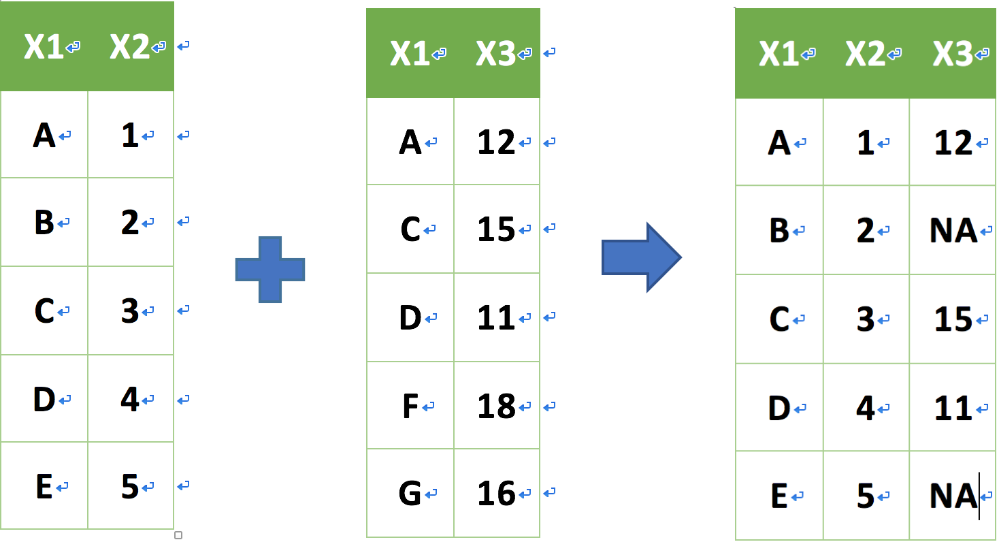

2016年6月29日
歡迎進入 R 的資料整形虛擬實境
Agenda
- Read JSON data in R
- Data-Manipulation
- package: magrittr
- package: dplyr
- package: reshape2
讓我們複習一下如何安裝套件吧！
# 安裝今早課程所需所有套件
install.packages("jsonlite")
install.packages("magrittr")
install.packages("dplyr")
install.packages("reshape2")
# 將套件載入
library(jsonlite)
library(magrittr)
library(dplyr)
library(reshape2)
Ch01 Read JSON data in R
Read JSON data in R
什麼是 JSON data？
- JSON = JavaScriptObjectNotation
- JSON 是網路上非常廣泛被使用的資料格式之一，尤其在
各種傳遞資料的API中- eg. 臺北市的 Youbike API 資料、Facebook 上的 API 資料
- API是什麼？
只會讀csv太low！我們要來點進階的！
Read JSON data in R (Cont.)
先來看看 JSON data 的長相吧！
- 一個完整的訊息被
{}給包住了！也就是一個 JSON 物件 - 每個 JSON 物件中都有一對對的名稱與值(eg. "sna":"捷運市政府站(3號出口)")
Read JSON data in R (Cont.)
開始實戰讀 JSON data！
- 請先於下方
Console輸入：vignette("json-aaquickstart", "jsonlite")- 什麼是 vignette ? Ans：學習套件的起手式！
- 這時
檔案系統區應該會開啟一個html的網頁，此為幫助我們上手 jsonlite 物件的祕笈！ - 基本款：使用 jsonlite 套件提供的 toJSON 和 fromJSON 即可在不損失任何資訊下在 R 與 JSON data 間進行轉換
# A JSON array of primitives json <- '["Mario", "Peach", null, "Bowser"]' # Simplifies into an atomic vector fromJSON(json)
[1] "Mario" "Peach" NA "Bowser"
Read JSON data in R (Cont.)
開始實戰讀 Youbike data！
到這裡下載最新的 Youbike 即時資訊檔吧！YouBike臺北市公共自行車即時資訊
把下載好的
YoubikeTP檔放入工作目錄底下方便讀取！(Hint: getwd())開啟你的 RStudio (應該已經開啟了吧！？)
我們要開始寫 code 囉！
Read JSON data in R (Cont.)
開始實戰讀 Youbike data！(Cont.)
# 讀入剛剛下載的youbike檔案
youbike_data <- fromJSON("YoubikeTP")
# 由於讀入後R會將檔案存成list格式，故我們要先將list格式變成charactor vector
youbike_chr <- unlist(youbike_data)
head(youbike_chr)
retCode retVal.0001.sno retVal.0001.sna
"1" "0001" "捷運市政府站(3號出口)"
retVal.0001.tot retVal.0001.sbi retVal.0001.sarea
"180" "72" "信義區"
Read JSON data in R (Cont.)
開始實戰讀 Youbike data！(Cont.)
# 將每一個charactor填入matrix中，matrix為矩陣的意思
# byrow = T的意思是將資料依列擺入，ncol為行數，其餘參數怎麼用？請自行輸入：?matrix
youbike_mat <- matrix(youbike_chr, byrow = T, ncol = 14)
# 將matrix轉為dataframe格式
youbike <- data.frame(youbike_mat, stringsAsFactors = F)
# 輸入youbike行的變數名稱
colnames(youbike) <- c("act","sno","sna","tot","sbi","sarea","mday","lat","lng","ar","sareaen","snaen","aren","bemp")
# 取前六筆看看
head(youbike)
Read JSON data in R (Cont.)
開始實戰讀 Youbike data！(Cont.)
act sno sna tot sbi sarea mday
1 1 0001 捷運市政府站(3號出口) 180 72 信義區 20160621234933
2 1 0002 捷運國父紀念館站(2號出口) 48 13 大安區 20160621234915
3 1 0003 台北市政府 40 4 信義區 20160621234923
4 1 0004 市民廣場 60 17 信義區 20160621234936
5 1 0005 興雅國中 60 26 信義區 20160621234910
6 1 0006 世貿二館 80 27 信義區 20160621234918
lat lng ar sareaen
1 25.0408578889 121.567904444 忠孝東路/松仁路(東南側) Xinyi Dist.
2 25.041254 121.55742 忠孝東路四段/光復南路口(西南側) Daan Dist.
3 25.0377972222 121.565169444 台北市政府東門(松智路) Xinyi Dist.
4 25.0360361111 121.562325 市府路/松壽路(西北側) Xinyi Dist.
5 25.0365638889 121.5686639 松仁路/松仁路95巷(東南側) Xinyi Dist.
6 25.0347361111 121.565658333 松智路/松廉路(東北側) Xinyi Dist.
snaen
1 MRT Taipei City Hall Stataion(Exit 3)-2
2 MRT S.Y.S Memorial Hall Stataion(Exit 2.)
3 Taipei City Hall
4 Citizen Square
5 Xingya Jr. High School
6 TWTC Exhibition Hall 2
aren bemp
1 The S.W. side of Road Zhongxiao East Road & Road Chung Yan. 106
2 Sec,4. Zhongxiao E.Rd/GuangFu S. Rd 35
3 Taipei City Government Eastgate (Song Zhi Road) 36
4 The N.W. side of Road Shifu & Road Song Shou. 43
5 The S.E. side of Road Songren & Ln. 95, Songren Rd.. 34
6 The N.E. side of Road Song Zhi & Road Song Lian. 49
Read JSON data in R (Cont.)
開始實戰讀 Youbike data！(Cont.)
# 取後六筆看看 tail(youbike)
act sno sna tot sbi sarea
240 1 0252 大安運動中心 42 9 大安區
241 1 0255 光復南路22巷口 30 26 松山區
242 1 0256 中山中正路口 40 10 士林區
243 1 0258 聯合醫院中興院區 40 4 大同區
244 1 0259 南京遼寧街口 36 13 中山區
245 1 1 0001 捷運市政府站(3號出口) 180 72
mday lat lng
240 20160621234935 25.020544 121.545608
241 20160621234920 25.046914 121.557674
242 20160621234932 25.096507 121.527526
243 20160621234911 25.052096 121.507979
244 20160621234921 25.051761 121.542168
245 信義區 20160621234933 25.0408578889
ar sareaen
240 辛亥路三段55號前方人行道(大安運動中心) Daan Dist.
241 光復南路23號對面人行道 Songshan Dist.
242 中山北路五段609-625號前人行道(中山中正路口) Shilin Dist.
243 長安西路299-2號對面人行道 Datong Dist.
244 南京東路三段189號對面(南京遼寧街口東南側) Zhongshan Dist.
245 121.567904444 忠孝東路/松仁路(東南側)
snaen
240 Daan Sports Center
241 Ln. 22, Guangfu S. Rd.
242 Zhongshan & Zhongzheng Intersection
243 Taipei City Hospital (Zhongxing Branch)
244 Nanjing & Liaoning Intersection
245 Xinyi Dist.
aren
240 No.55, Sec. 3, Xinhai Rd.
241 No.23, Guangfu S. Rd.(oppsite)
242 No.609 to No.625, Sec. 5, Zhongshan N. Rd.
243 No.299-2, Chang’an W. Rd.(oppsite)
244 No.189, Sec. 3, Nanjing E. Rd.(oppsite)
245 MRT Taipei City Hall Stataion(Exit 3)-2
bemp
240 33
241 4
242 29
243 35
244 22
245 The S.W. side of Road Zhongxiao East Road & Road Chung Yan.
Read JSON data in R (Cont.)
開始實戰讀 Youbike data！(Cont.)
# 發現最後一列跑掉，將最後一列去掉 youbike <- youbike[-nrow(youbike),] # 再檢查一次最後三筆資料 tail(youbike)
act sno sna tot sbi sarea mday lat
239 1 0251 華齡公園 36 23 士林區 20160621234923 25.083023
240 1 0252 大安運動中心 42 9 大安區 20160621234935 25.020544
241 1 0255 光復南路22巷口 30 26 松山區 20160621234920 25.046914
242 1 0256 中山中正路口 40 10 士林區 20160621234932 25.096507
243 1 0258 聯合醫院中興院區 40 4 大同區 20160621234911 25.052096
244 1 0259 南京遼寧街口 36 13 中山區 20160621234921 25.051761
lng ar sareaen
239 121.520692 劍潭路80對面公園(華齡公園) Shilin Dist.
240 121.545608 辛亥路三段55號前方人行道(大安運動中心) Daan Dist.
241 121.557674 光復南路23號對面人行道 Songshan Dist.
242 121.527526 中山北路五段609-625號前人行道(中山中正路口) Shilin Dist.
243 121.507979 長安西路299-2號對面人行道 Datong Dist.
244 121.542168 南京東路三段189號對面(南京遼寧街口東南側) Zhongshan Dist.
snaen
239 Hualing Park
240 Daan Sports Center
241 Ln. 22, Guangfu S. Rd.
242 Zhongshan & Zhongzheng Intersection
243 Taipei City Hospital (Zhongxing Branch)
244 Nanjing & Liaoning Intersection
aren bemp
239 No.80, Jiantan Rd.(oppsite) 13
240 No.55, Sec. 3, Xinhai Rd. 33
241 No.23, Guangfu S. Rd.(oppsite) 4
242 No.609 to No.625, Sec. 5, Zhongshan N. Rd. 29
243 No.299-2, Chang’an W. Rd.(oppsite) 35
244 No.189, Sec. 3, Nanjing E. Rd.(oppsite) 22
CH02-1 Data-Manipulation：magrittr
Data-Manipulation：magrittr
用好工具先來養成好習慣：Pipeline
- 壓縮的程式碼不易讀且複雜
- 展開的程式碼好讀但是太冗長，而且產生過多暫存變數
magrittr 套件聽到大家的聲音了！
- 養成
Pipeline Style的 coding 習慣，上述問題迎刃而解！- Pipeline 快捷鍵：ctrl / command + shift + M
Data-Manipulation：magrittr (Cont.)
用好工具先來養成好習慣：Pipeline

Data-Manipulation：magrittr (Cont.)
直接來點例子吧！
# 舊方法 temp1 <- youbike$sarea temp1 <- as.character(temp1) counts <- table(temp1) counts
temp1
北投區 大安區 大同區 南港區 內湖區 士林區 松山區 萬華區 文山區 信義區
16 34 15 14 20 22 17 16 16 28
中山區 中正區
27 19
Data-Manipulation：magrittr (Cont.)
直接來點例子吧！(Cont.)
# Pipeline youbike$sarea %>% as.character() %>% table()
.
北投區 大安區 大同區 南港區 內湖區 士林區 松山區 萬華區 文山區 信義區
16 34 15 14 20 22 17 16 16 28
中山區 中正區
27 19
CH02-2 Data-Manipulation：dplyr
Data-Manipulation：dplyr
R 界的資料首席外科醫師：dplyr
- Hadley Wickham 和 Romain Francois 在2014年上架的一個套件
- 提供許多
直觀的函數讓 R user 在資料整理上更便利 - 可以結合 magrittr 套件中的
Pipeline！ - 針對
data.frame做設計的套件 處理效能被 Romain 利用 C++優化過- 能與
SQL 語法以及Excel的樞紐分析表互相對應
Data-Manipulation：dplyr (Cont.)
如何自學 dplyr？
- 學習套件的起手式：
vignette(package = "dplyr") - 想要學得透徹可以閱讀 Hadley 大大 為 dplyr 撰寫的小論文
vignette(all = TRUE, package = "dplyr")
vignette("introduction", package = "dplyr")
- dplyr 懶人包：
Data-Manipulation：dplyr (Cont.)
必先利其器：整形醫材簡介
select：對欄進行篩選filter：對列進行條件篩選slice：對列進行篩選mutate：更改欄位或新增欄位group_by + summarise：依照類別進行彙整arrange：排序bind_rows, bind_cols：合併列、合併行join family：- mutating join：
left_join,right_join,inner_join,full_join
- mutating join：
intersect,union,setdiff
Data-Manipulation：dplyr (Cont.)
我們來將今天要用到的檔案讀入R吧！
# 讀入歷屆護理人員資料
data_nurse <- read.csv("歷年護理人員資料.csv",
header = T,
sep = ",",
stringsAsFactors = F,
fileEncoding = "UTF-8")
# 看看資料結構
str(data_nurse)
'data.frame': 25634 obs. of 6 variables: $ 性別 : chr "F" "F" "F" "F" ... $ 醫療層級: chr "醫學中心" "醫學中心" "醫學中心" "醫學中心" ... $ 縣市 : chr "高雄市" "高雄市" "高雄市" "高雄市" ... $ 年齡 : int 20 20 20 20 20 20 20 20 21 21 ... $ 年度 : int 2005 2006 2007 2008 2009 2010 2011 2012 2005 2006 ... $ 人數 : int 56 17 11 1 5 5 7 7 71 75 ...
Data-Manipulation：dplyr (Cont.)
我們來將今天要用到的檔案讀入R吧！(Cont.)
# 讀入youbike檔案
data_ubike <- read.csv("ubike-hour-201502-utf8.csv",
header = T,
sep = ",",
stringsAsFactors = F,
fileEncoding = "UTF-8")
Data-Manipulation：dplyr (Cont.)
我們來將今天要用到的檔案讀入R吧！(Cont.)
# 看看資料結構 str(data_ubike)
'data.frame': 135859 obs. of 21 variables: $ date : chr "2015-02-01" "2015-02-01" "2015-02-01" "2015-02-01" ... $ hour : int 0 0 0 0 0 0 0 0 0 0 ... $ sno : int 1 2 3 5 7 8 11 12 13 15 ... $ sarea : chr "信義區" "大安區" "信義區" "信義區" ... $ sna : chr "捷運市政府站(3號出口)" "捷運國父紀念館站(2號出口)" "台北市政府" "興雅國中" ... $ lat : num 25 25 25 25 25 ... $ lng : num 122 122 122 122 122 ... $ tot : int 180 48 40 60 80 60 66 34 66 60 ... $ avg.sbi : num 4.153 1.322 0.407 1.22 2.949 ... $ max.sbi : int 11 5 1 3 9 7 21 24 48 38 ... $ min.sbi : int 0 0 0 0 0 0 16 2 35 17 ... $ std.sbi : num 3.643 1.383 0.495 0.966 3.345 ... $ avg.bemp : num 175.8 46.7 39.6 57.8 76 ... $ max.bemp : int 180 48 40 59 79 59 50 32 31 43 ... $ min.bemp : int 169 43 39 56 69 52 45 10 18 22 ... $ std.bemp : num 3.643 1.383 0.495 0.966 3.476 ... $ temp : num 13.7 13.8 13.8 13.8 13.9 ... $ humidity : num 87.5 86.8 87.3 87.6 87.5 ... $ pressure : num 1026 1025 1026 1026 1026 ... $ max.anemo: num 1.777 0.852 1.613 1.913 1.909 ... $ rainfall : num 0 0 0 0 0 0 0 0 0 0 ...
Data-Manipulation：dplyr (Cont.)
Youbike 資料欄位說明
英文欄位名稱 中文欄位名稱 英文欄位名稱.1 中文欄位名稱.1 1 date 日期 std.sbi 車輛數標準差 2 hour 時間 avg.bemp 平均空位數 3 sno 場站代號 max.bemp 最大空位數 4 sarea 場站區域 min.bemp 最小空位數 5 sna 場站名稱 std.bemp 空位數標準差 6 lat 緯度 temp 平均氣溫 7 lng 經度 humidity 濕度 8 tot 總停車格 pressure 氣壓 9 avg.sbi 平均車輛數 max.anemo 最大風速 10 max.sbi 最大車輛數 rainfull 降雨量 11 min.sbi 最小車輛數
Data-Manipulation：dplyr (Cont.)
我們來假設一個情境…
GU 畢業後想在信義區附近租房子，大安區上班，希望以後上下班可以靠 ubike 通勤，故希望每天早上7:00左右與下午19:00左右都可以輕鬆的租借到ubike。
- 請幫 GU 找出信義區早上7:00與大安區下午19:00腳踏車最多的場站
- 也請幫 GU 找出大安區早上8:00與信義區下午20:00空位數最多的場站
程式碼要怎麼寫呢......？一步一步來吧！
Data-Manipulation：dplyr (Cont.)
select
Data-Manipulation：dplyr (Cont.)
首先，我們會利用 select 挑選出需要的欄位
# 挑出時間、場站區域、場站名稱、平均車輛數 data_ubike %>% select(hour, sarea, sna, avg.sbi) %>% head()
hour sarea sna avg.sbi 1 0 信義區 捷運市政府站(3號出口) 4.153 2 0 大安區 捷運國父紀念館站(2號出口) 1.322 3 0 信義區 台北市政府 0.407 4 0 信義區 興雅國中 1.220 5 0 信義區 信義廣場(台北101) 2.949 6 0 信義區 世貿三館 1.983
Data-Manipulation：dplyr (Cont.)
filter
Data-Manipulation：dplyr (Cont.)
再來，我們要篩選出信義區早上7:00與大安區下午19:00的資料
# 篩選出信義區早上7:00與大安區下午19:00的資料 data_ubike %>% select(hour, sarea, sna, avg.sbi) %>% filter(sarea == "信義區" & hour == 7) data_ubike %>% select(hour, sarea, sna, avg.sbi) %>% filter(sarea == "大安區" & hour == 19)
Data-Manipulation：dplyr (Cont.)
再來，我們要篩選出信義區早上7:00與大安區下午19:00的資料(Cont.)
hour sarea sna avg.sbi 1 7 信義區 捷運市政府站(3號出口) 125.200 2 7 信義區 台北市政府 7.367 3 7 信義區 市民廣場 8.100 4 7 信義區 興雅國中 11.067 5 7 信義區 世貿二館 6.600 6 7 信義區 信義廣場(台北101) 9.433
hour sarea sna avg.sbi 1 19 大安區 捷運國父紀念館站(2號出口) 13.780 2 19 大安區 捷運科技大樓站 13.831 3 19 大安區 信義建國路口 4.424 4 19 大安區 金山愛國路口 22.983 5 19 大安區 基隆長興路口 15.667 6 19 大安區 辛亥新生路口 10.746
Data-Manipulation：dplyr (Cont.)
slice
Data-Manipulation：dplyr (Cont.)
把剛剛的資料擷取前面六筆看看吧！
# 擷取信義區早上7:00的資料前六筆 data_ubike %>% select(hour, sarea, sna, avg.sbi) %>% filter(sarea == "信義區" & hour == 7) %>% slice(1:6)
hour sarea sna avg.sbi 1 7 信義區 捷運市政府站(3號出口) 125.200 2 7 信義區 台北市政府 7.367 3 7 信義區 市民廣場 8.100 4 7 信義區 興雅國中 11.067 5 7 信義區 世貿二館 6.600 6 7 信義區 信義廣場(台北101) 9.433
Data-Manipulation：dplyr (Cont.)
mutate
Data-Manipulation：dplyr (Cont.)
將平均車輛數無條件捨去至個位數，直接更新原始欄位
data_ubike %>% select(hour, sarea, sna, avg.sbi) %>% filter(sarea == "信義區" & hour == 7) %>% mutate(avg.sbi = floor(avg.sbi)) data_ubike %>% select(hour, sarea, sna, avg.sbi) %>% filter(sarea == "大安區" & hour == 19) %>% mutate(avg.sbi = floor(avg.sbi))
Data-Manipulation：dplyr (Cont.)
將平均車輛數無條件捨去至個位數，直接更新原始欄位(Cont.)
hour sarea sna avg.sbi 1 7 信義區 捷運市政府站(3號出口) 125 2 7 信義區 台北市政府 7 3 7 信義區 市民廣場 8 4 7 信義區 興雅國中 11 5 7 信義區 世貿二館 6 6 7 信義區 信義廣場(台北101) 9
hour sarea sna avg.sbi 1 19 大安區 捷運國父紀念館站(2號出口) 13 2 19 大安區 捷運科技大樓站 13 3 19 大安區 信義建國路口 4 4 19 大安區 金山愛國路口 22 5 19 大安區 基隆長興路口 15 6 19 大安區 辛亥新生路口 10
Data-Manipulation：dplyr (Cont.)
group_by
Data-Manipulation：dplyr (Cont.)
group_by + summarise
Data-Manipulation：dplyr (Cont.)
1. 計算信義區早上7:00各站點的平均車輛數
2. 計算大安區晚上19:00各站點的平均車輛數
data_ubike %>% select(hour, sarea, sna, avg.sbi) %>% filter(sarea == "信義區" & hour == 7) %>% mutate(avg.sbi = floor(avg.sbi)) %>% group_by(hour, sarea, sna) %>% summarise(avg = mean(avg.sbi, na.rm = T) %>% round()) data_ubike %>% select(hour, sarea, sna, avg.sbi) %>% filter(sarea == "大安區" & hour == 19) %>% mutate(avg.sbi = floor(avg.sbi)) %>% group_by(hour, sarea, sna) %>% summarise(avg = mean(avg.sbi, na.rm = T) %>% round())
Data-Manipulation：dplyr (Cont.)
1. 計算信義區早上7:00各站點的平均車輛數(Cont.)
2. 計算大安區晚上19:00各站點的平均車輛數(Cont.)
Source: local data frame [6 x 4] Groups: hour, sarea [1] hour sarea sna avg (int) (chr) (chr) (dbl) 1 7 信義區 福德公園 42 2 7 信義區 基隆光復路口 5 3 7 信義區 捷運市政府站(3號出口) 116 4 7 信義區 捷運台北101/世貿站 23 5 7 信義區 捷運象山站 27 6 7 信義區 捷運永春站(2號出口) 7
Data-Manipulation：dplyr (Cont.)
1. 計算信義區早上7:00各站點的平均車輛數(Cont.)
2. 計算大安區晚上19:00各站點的平均車輛數(Cont.)
Source: local data frame [6 x 4] Groups: hour, sarea [1] hour sarea sna avg (int) (chr) (chr) (dbl) 1 19 大安區 成功國宅 9 2 19 大安區 敦化基隆路口 5 3 19 大安區 基隆長興路口 5 4 19 大安區 建國和平路口 10 5 19 大安區 捷運大安森林公園站 14 6 19 大安區 捷運大安站 6
Data-Manipulation：dplyr (Cont.)
arrange
Data-Manipulation：dplyr (Cont.)
將平均車輛數由大到小排序，看看哪個站點的車子最多吧！
# 信義區 data_ubike %>% select(hour, sarea, sna, avg.sbi) %>% filter(sarea == "信義區" & hour == 7) %>% mutate(avg.sbi = floor(avg.sbi)) %>% group_by(hour, sarea, sna) %>% summarise(avg = mean(avg.sbi, na.rm = T) %>% round()) %>% arrange(avg %>% desc()) # 大安區 data_ubike %>% select(hour, sarea, sna, avg.sbi) %>% filter(sarea == "大安區" & hour == 19) %>% mutate(avg.sbi = floor(avg.sbi)) %>% group_by(hour, sarea, sna) %>% summarise(avg = mean(avg.sbi, na.rm = T) %>% round()) %>% arrange(avg %>% desc())
Data-Manipulation：dplyr (Cont.)
將平均車輛數由大到小排序，看看哪個站點的車子最多吧！(Cont.)
Source: local data frame [6 x 4] Groups: hour, sarea [1] hour sarea sna avg (int) (chr) (chr) (dbl) 1 7 信義區 捷運市政府站(3號出口) 116 2 7 信義區 福德公園 42 3 7 信義區 吳興公車總站 28 4 7 信義區 捷運象山站 27 5 7 信義區 三張犁 24 6 7 信義區 台北市災害應變中心 24
Data-Manipulation：dplyr (Cont.)
將平均車輛數由大到小排序，看看哪個站點的車子最多吧！(Cont.)
Source: local data frame [6 x 4] Groups: hour, sarea [1] hour sarea sna avg (int) (chr) (chr) (dbl) 1 19 大安區 羅斯福新生南路口 61 2 19 大安區 捷運麟光站2號出口 29 3 19 大安區 龍門廣場 23 4 19 大安區 捷運東門站(4號出口) 19 5 19 大安區 捷運科技大樓站 19 6 19 大安區 捷運忠孝復興站(2號出口) 19
Practice Time!!
現學現賣 Part1！
剛剛大家已經算出兩個地區兩個時段車輛最多的站點了，由於停車找不到空車位也是很囧的一件事！現在請大家幫 GU 找出大安區早上8:00與信義區下午20:00空位數最多的場站吧！
Source: local data frame [6 x 4] Groups: hour, sarea [1] hour sarea sna avg (int) (chr) (chr) (dbl) 1 8 大安區 羅斯福新生南路口 57 2 8 大安區 基隆長興路口 48 3 8 大安區 捷運大安森林公園站 47 4 8 大安區 臺大資訊大樓 45 5 8 大安區 捷運大安站 41 6 8 大安區 捷運麟光站2號出口 40
Practice Time!!
現學現賣 Part1！
剛剛大家已經算出兩個地區兩個時段車輛最多的站點了，由於停車找不到空車位也是很囧的一件事！現在請大家幫 GU 找出大安區早上8:00與信義區下午20:00空位數最多的場站吧！
Source: local data frame [6 x 4] Groups: hour, sarea [1] hour sarea sna avg (int) (chr) (chr) (dbl) 1 20 信義區 捷運市政府站(3號出口) 151 2 20 信義區 信義廣場(台北101) 74 3 20 信義區 世貿二館 72 4 20 信義區 興雅國中 54 5 20 信義區 三張犁 53 6 20 信義區 世貿三館 48
Practice Time!!
現學現賣 Part2！
GU 身旁有許多朋友會在晚上的時間後租借 ubike 騎腳踏車運動，但是騎車最怕碰到下雨，所以 GU 想要了解晚上溼度的高低是否會與民眾租借ubike的意願有關聯性？
例如：溼度高可能意味者降雨機率也高，會不會使得民眾使用ubike的意願降低？
–> 觀察濕度與平均空位數的相關係數
Hint：cor()為計算兩向量相關係數的函數
Practice Time!!
現學現賣 Part2！(Cont.)
# 挑選欄位：時間、平均空位數、濕度 # 篩選時間介於18:00-24:00間的資料 # 將平均空位數欄位無條件捨去到個位數後，將新資料表assign至新變數中 data_ubike %>% select(hour, avg.bemp, humidity) %>% filter(hour <= 24 & hour >= 18) %>% mutate(avg.bemp = floor(avg.bemp)) -> data_ubike_part2 # 觀察平均空位數與濕度間的相關係數 cor(data_ubike_part2$avg.bemp, data_ubike_part2$humidity)
[1] 0.00709804
Data-Manipulation：dplyr (Cont.)
bind family：bind_rows
Data-Manipulation：dplyr (Cont.)
bind family：bind_cols
Data-Manipulation：dplyr (Cont.)
直接來點例子吧！
- 將剛剛計算出來
各個站點平均車輛數的data以行政區個別存入變數，並將兩個資料集以列合併
# 信義區 data_ubike %>% select(hour, sarea, sna, avg.sbi) %>% filter(sarea == "信義區" & hour == 7) %>% mutate(avg.sbi = floor(avg.sbi)) %>% group_by(hour, sarea, sna) %>% summarise(avg = mean(avg.sbi, na.rm = T) %>% round()) %>% arrange(avg %>% desc()) -> Xinyi
Data-Manipulation：dplyr (Cont.)
直接來點例子吧！(Cont.)
- 將剛剛計算出來
各個站點平均車輛數的data以行政區個別存入變數，並將兩個資料集以列合併
# 大安區 data_ubike %>% select(hour, sarea, sna, avg.sbi) %>% filter(sarea == "大安區" & hour == 19) %>% mutate(avg.sbi = floor(avg.sbi)) %>% group_by(hour, sarea, sna) %>% summarise(avg = mean(avg.sbi, na.rm = T) %>% round()) %>% arrange(avg %>% desc()) -> Daan # 列合併 data_bind <- bind_rows(Xinyi, Daan)
Data-Manipulation：dplyr (Cont.)
直接來點例子吧！(Cont.)
- 將剛剛計算出來
各個站點平均車輛數的data以行政區個別存入變數，並將兩個資料集以列合併
# 檢查維度 dim(Xinyi)
[1] 23 4
dim(Daan)
[1] 30 4
dim(data_bind)
[1] 53 4
Data-Manipulation：dplyr (Cont.)
先把 join family 的 dataframe 準備好！
a <- data.frame(x1 = c("A", "B", "C", "D", "E"),
x2 = c(1, 2, 3, 4, 5), stringsAsFactors = F)
b <- data.frame(x1 = c("A", "C", "D", "F", "G"),
x2 = c(12, 15, 11, 18, 16), stringsAsFactors = F)
c <- data.frame(x1 = c("A", "C", "D", "F", "G"),
x2 = c(1, 3, 4, 8, 9), stringsAsFactors = F)
Data-Manipulation：dplyr (Cont.)
join family：left_join
left_join(a, b, by = "x1")

Data-Manipulation：dplyr (Cont.)
join family：right_join
right_join(a, b, by = "x1")
Data-Manipulation：dplyr (Cont.)
join family：inner_join
inner_join(a, b, by = "x1")
Data-Manipulation：dplyr (Cont.)
join family：full_join
full_join(a, b, by = "x1")
Data-Manipulation：dplyr (Cont.)
intersect (交集)
intersect(a, c)
Data-Manipulation：dplyr (Cont.)
union (聯集)
union(a, c)
Data-Manipulation：dplyr (Cont.)
setdiff (差集)
setdiff(a, c)
CH02-3 Data-Manipulation：reshape2
Data-Manipulation：reshape2
melt：寬資料轉換為長資料
cast：長資料轉換為寬資料
dcast：for data.frameacast：for vector, matrix and array
Data-Manipulation：reshape2(Cont.)
melt：寬資料轉換為長資料
直接Demo一下！
data("WorldPhones")
WP <- as.data.frame(WorldPhones)
WP$year <- rownames(WP)
WP.melt <- melt(WP, id.var = 'year')
Data-Manipulation：reshape2(Cont.)
melt：寬資料轉換為長資料(Cont.)
N.Amer Europe Asia S.Amer Oceania Africa Mid.Amer year 1951 45939 21574 2876 1815 1646 89 555 1951 1956 60423 29990 4708 2568 2366 1411 733 1956 1957 64721 32510 5230 2695 2526 1546 773 1957 1958 68484 35218 6662 2845 2691 1663 836 1958 1959 71799 37598 6856 3000 2868 1769 911 1959 1960 76036 40341 8220 3145 3054 1905 1008 1960
year variable value 1 1951 N.Amer 45939 2 1956 N.Amer 60423 3 1957 N.Amer 64721 4 1958 N.Amer 68484 5 1959 N.Amer 71799 6 1960 N.Amer 76036
Data-Manipulation：reshape2(Cont.)
cast：長資料轉換為寬資料
直接Demo一下！
WP.cast <- dcast(WP.melt, year ~ variable, value.var="value") head(WP.melt) head(WP.cast)
Data-Manipulation：reshape2(Cont.)
cast：長資料轉換為寬資料(Cont.)
直接Demo一下！
year variable value 1 1951 N.Amer 45939 2 1956 N.Amer 60423 3 1957 N.Amer 64721 4 1958 N.Amer 68484 5 1959 N.Amer 71799 6 1960 N.Amer 76036
year N.Amer Europe Asia S.Amer Oceania Africa Mid.Amer 1 1951 45939 21574 2876 1815 1646 89 555 2 1956 60423 29990 4708 2568 2366 1411 733 3 1957 64721 32510 5230 2695 2526 1546 773 4 1958 68484 35218 6662 2845 2691 1663 836 5 1959 71799 37598 6856 3000 2868 1769 911 6 1960 76036 40341 8220 3145 3054 1905 1008
Practice Time!!
現學現賣！
GU 想要知道各縣市在2012年度各醫療層級的護理人員數，拜託各位資料分析師幫幫忙～
Answer
GU 想要知道各縣市在2012年度各醫療層級的護理人員數，拜託各位資料分析師幫幫忙～
# 先將2012年資料給篩選出來 # 依照縣市以及醫療層級進行分類，計算各縣市各醫療層級的總護理人員數 # 將長資料轉換成寬資料 data_nurse %>% filter(年度 == 2012) %>% group_by(縣市, 醫療層級) %>% summarise(總人數 = sum(人數)) %>% dcast(縣市 ~ 醫療層級, value.var = "總人數")
Answer(Cont.)
GU 想要知道各縣市在2012年度各醫療層級的護理人員數，拜託各位資料分析師幫幫忙～
你以為這樣就結束了嗎？
大魔王來了！
挑戰整理明天的電力資料(Case Study)！
進階資料整形，若時間允許我會帶著大家做一遍！靜待課堂上由我慢慢解釋：）
下一步要做什麼？
資料視覺化很重要！
為什麼要將清理、整理完的資料視覺化？
- R 有很強大的
資料視覺化功能 - 將資料視覺化可以讓
普羅大眾更直觀地了解你的分析結果 - 不免俗的就是很
炫啊！！！ - 視覺化可以從另一個角度讓你挖掘資料中潛在的訊息
- etc.
下午我們會有請本團隊的資料視覺化達人--崇甫，來為大家介紹這一部份：）